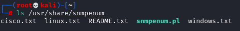
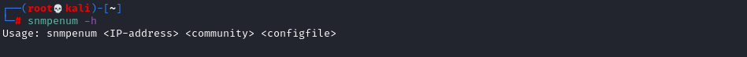
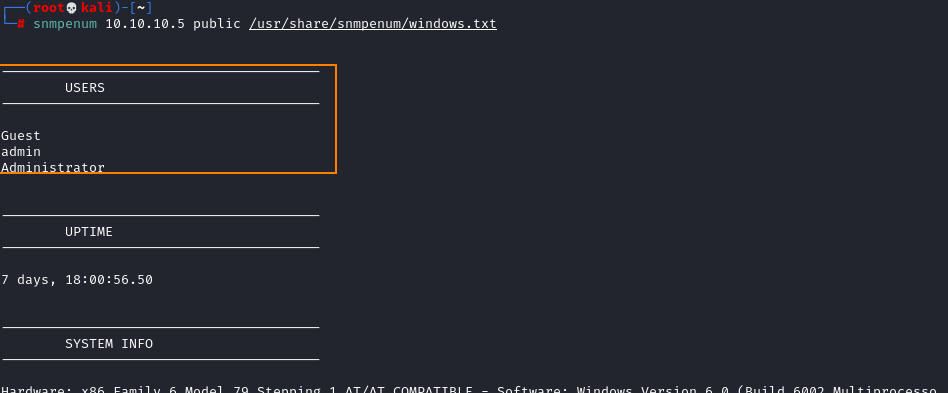

2. More Information
Let's try to get as much information are possible from the SNMP
snmpenumIt uses a database of OIDs to request specific information via SNMP.
It comes with a set of 3 databases depending which machine we are targeting: cisco, linux, windows
How to use it:
Because we are targeting a Windows machine
 Information retrieved: User, system info, services, uptime, domain, running processes, listening tcp ports, installed software,....
Note the Users, we can try to use them to crack into the network (see
Hydra SMB or the module of
metasploit )
◇ create users wordlists with the users found
echo -e "admin\nAdministrator\nGuest " > users.txt
(scripts for information gathering)
nmap -sU -p 161 --script=snmp-brute,snmp-win32-services,snmp-win32-users,snmp-sysdescr 10.10.10.5